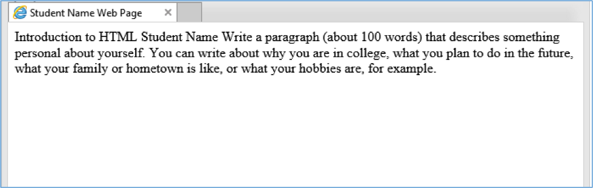
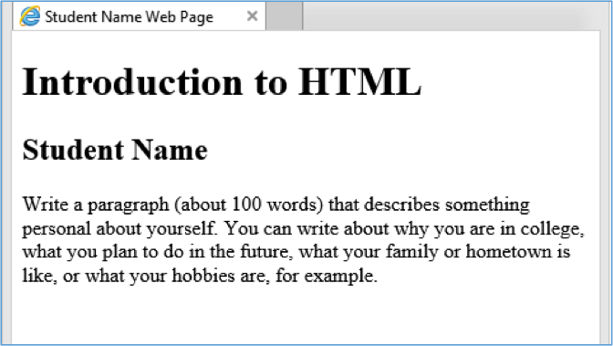
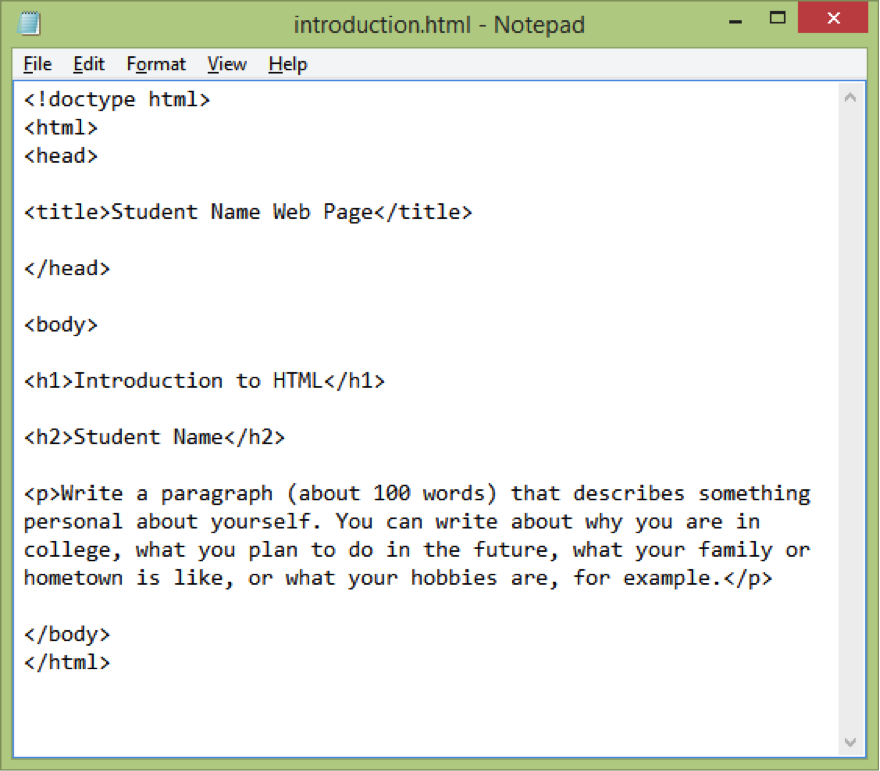

Introduction to HTML
Part 1
In the first part of this assignment, you will open an existing HTML file to view its contents, then make changes to the file, using a browser to view the changes made to the Web page.
HTML uses tags to define the separate parts of a page. In the steps below, you will use the <h1> tag to define the main heading of a page, the <h2> tag to define a subheading, and the <p> tag to define a paragraph of text in an HTML page.
Start by watching this video.
Using the introduction.html file provided in the overview page for this assignment, complete the following steps:
- Double-click the file named introduction.html. This will open the file in a window of the default browser on your computer. It will look very plain, with a single block of text. Leave this window open as you work on the file in another window.
- Open Notepad, then open the introduction.html file from your YourNameHTML folder using File/Open. You cannot open this file in Notepad by double-clicking the file.
- Before changing anything in the file, note the use of the existing tags:
- <html> … </html>: The first <html> tag appears at the very top of the page, to let the browser know that the file uses HTML code. The closing tag (</html>) appears at the bottom of the page. All of the contents of the page should be inside these tags.
- <head> … </head>: The <head> section includes text and other information that will not appear in the page when viewed in the browser. This section can be used for a variety of purposes, including adding keywords that can help a search engine find the page more easily. In this case, only the <title> text appears in this section of the page. The <head> section must be closed (using </head>) prior to starting the body section of the page.
- <title> … </title>: The text in this section appears in the tab for that page when the page is opened in a browser.
- <body> … </body>: The <body> section includes all parts of the document that should appear in the browser window when the file is opened. The closing tag (</body>) should appear just above the closing </html> tag.
- Replace the following elements in the file, without deleting any of the existing HTML tags already in place:
- Page Title: Replace with the text Your Name Web Page.
- Student Name: Replace with your first and last name.
- Replace the paragraph starting with Write a paragraph… with an appropriate paragraph of text about yourself.
- Use File/Save or Ctrl-S to save the changes to the file. Do not close the file at this time.
- Switch back to your browser window and use the Refresh button in the toolbar or the F5 key to refresh the pages and display the new text. (If you closed the browser window earlier, you can simply double-click the introduction file in the YourNameHTML folder to reopen it.)
At this point, your Web Page should look very dull, with a single block of text and without any color or pictures. The font used to display the text in your browser may be different from the font shown in this screen shot, depending on the settings in your browser. The HTML file does not define what font to use, so the browser will display the font using its own default settings.

The text you entered inside the <title> tag should appear on the tab at the top of the window, but note that there are no line breaks in the body of the text, even though there are line breaks in the file in Notepad. This is because there are no HTML tags in the body of the page, to tell the browser how the text should be separated into blocks.
Complete the following steps to define separate sections of your page.
- Switch back to your Notepad window without closing your browser window.
- Add the Heading 1 tags (h1) around the title Introduction to HTML, so it looks like:
<h1>Introduction to HTML</h1>
- Add Heading 2 tags (h2) around your name:
<h2>Student Name</h2>
- Add paragraph tags (p) around the paragraph:
<p>Write a paragraph (about 100 words) that describes something personal about yourself. You can write about why you are in college, what you plan to do in the future, what your family or hometown is like, or what your hobbies are, for example.</p>
(Remember that your file should include a paragraph about yourself at this point, rather than the original text shown above.)
- Check to make sure that you have closed each tag correctly, as shown above.
- Use File/Save to save the changes to the file in Notepad, but do not close the file.

Because different browsers use different default settings, your page may look a little different. If you do not see the correct line breaks and/or different font sizes, go back to the file in Notepad and make sure that each tag was added correctly to each part of the body of the document. At this point, the HTML page should look something like:

Each time you make changes to the file in Notepad, you must save those changes in Notepad, then refresh the page in your browser window to see those changes.
Once you are satisfied with the layout of the text in your browser, take time to proofread the text that appears in the browser window and note any spelling or grammar errors. If there are errors, make corrections in the Notepad window and save them.
When you are happy with the page content and layout, move onto Part 2.